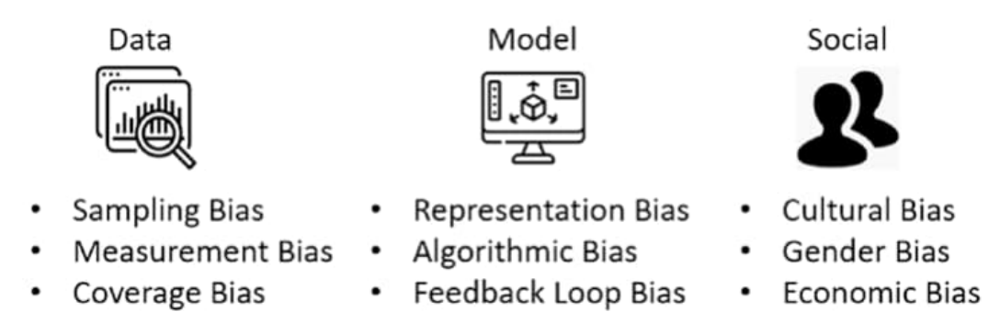
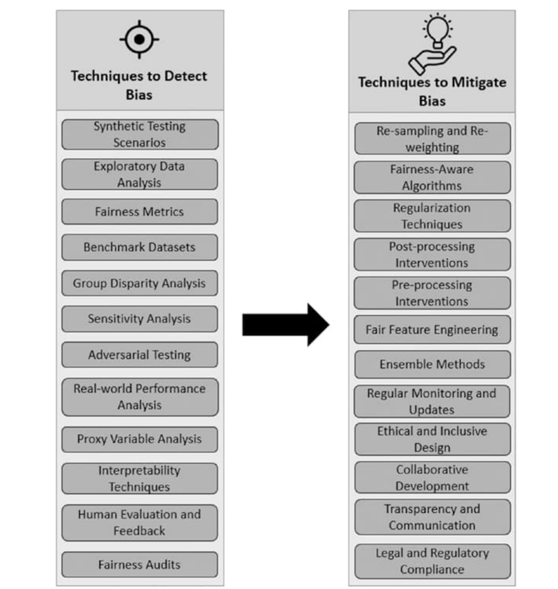
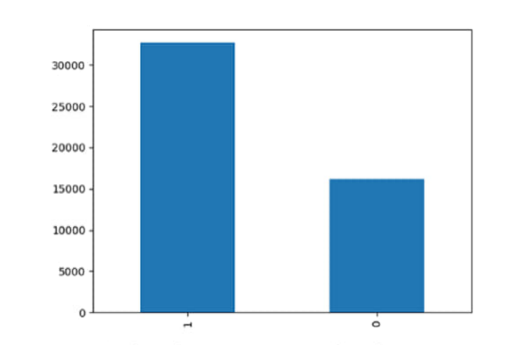
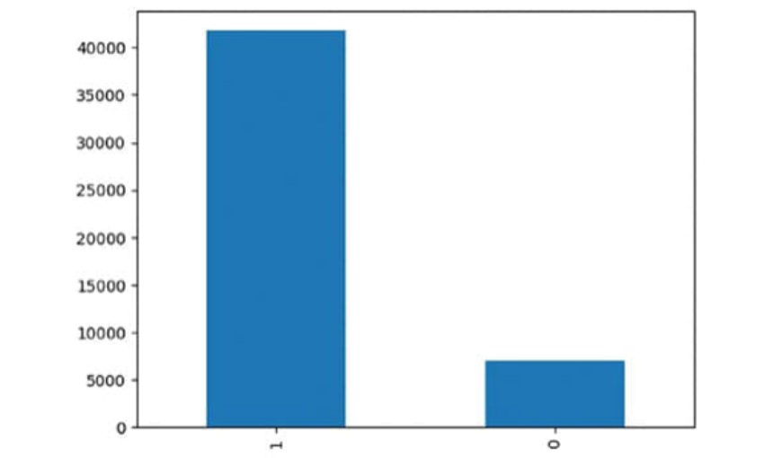

| Why | Explanation |
|---|---|
| Avoiding discrimination & inequity | Bias in data or models can produce discriminatory outcomes; understanding its origins lets developers treat all individuals impartially regardless of background, gender or race. |
| Ensuring ethical AI deployment | Lets developers align work with ethical principles and legal mandates — steer clear of accentuating societal biases; strive for fairness, transparency, accountability. |
| Building trust | Systems that keep producing biased outcomes erode public trust; addressing bias builds credibility and the belief that AI functions equitably. |
| Better decision making | AI now drives hiring, lending, criminal justice; understanding bias keeps those decisions informed, transparent and free of discriminatory influence. |
| Promoting innovation | A system tainted by bias may fail to represent the spectrum of human experience; fixing bias makes AI adaptive, versatile and potent across contexts. |
| Reducing reproduction of historical injustices | AI learning from biased data can inherit negative historical patterns and stereotypes; understanding this enables proactive prevention. |
| Diversity & inclusion | Pushes teams to be a microcosm of diversity → more comprehensive system design. |
| Social progress & long-term viability | Fair AI bridges disparities and champions equal opportunity; equitable systems enable sustainable adoption in health care, education and finance. |
Bias in ML = systematic, unfair errors in data or models that lead to inaccurate or unjust predictions. It can appear at different stages of the ML pipeline (Fig. 2-1).

| Category | Type | Meaning / example |
|---|---|---|
| 1. Data bias | Sampling bias | Collected data isn't representative of the population → over/under-representation. E.g. a medical dataset with only one demographic group → poor performance on others. |
| Measurement bias | Errors or inconsistencies in data collection/measurement. E.g. a survey in a language a community doesn't understand omits their view. | |
| Coverage bias | Certain groups or perspectives are missing (biased collection methods, incomplete sampling, systemic exclusion). | |
| 2. Model bias (from reliance on biased data in training; may be amplified) | Representation bias | Training features/attributes disproportionately favour certain groups; the model learns those biases. |
| Algorithmic bias | Some algorithms inherently perpetuate bias, e.g. a decision tree splitting on biased features reflects them in predictions. | |
| Feedback-loop bias | Predictions influence real-world decisions that shape future training data → bias reinforced over time. | |
| 3. Social bias (society's biases reflected in data and models) | Cultural bias | Cultural norms, beliefs and values shape how data is collected and interpreted. |
| Gender bias | Historical gender roles → unequal representation in datasets, affecting performance. | |
| Racial bias | Biased historical practices → under- or misrepresentation of racial groups. | |
| Economic bias | Socioeconomic disparities → differences in data availability and quality. |
| Case | What happened |
|---|---|
| 1. Amazon's gender-biased hiring tool (2018) | AI recruiting tool trained on ten years of resumes, mostly from men → learned to favour male applicants and downgrade resumes containing terms associated with women. |
| 2. Racial bias in criminal risk assessment | Tools predicting reoffending from historical arrest and conviction data overestimate risk for minority groups, leading to discriminatory sentencing and parole decisions. |
| 3. Google Photos racist labelling (2015) | Auto-tagging labelled images of Black people as "gorillas" — training data lacked diverse examples; shows the need for inclusive datasets. |
| 4. Biased loan-approval models | Some models unfairly denied loans to minority applicants or offered higher interest rates, reflecting historical bias in lending data. |
| 5. Facial recognition & racial bias | More likely to misidentify people with darker skin tones, particularly women → inaccurate surveillance, racial profiling, infringement of civil rights. |

| Technique | How it detects bias |
|---|---|
| Exploratory data analysis (EDA) | Visualise distributions and patterns across groups/attributes to spot disparities. |
| Fairness metrics | Quantify bias in predictions — disparate impact, equal opportunity difference, statistical parity difference — comparing outcomes between groups. |
| Benchmark datasets | Datasets with intentionally present fairness issues, to test how well models handle bias. |
| Group disparity analysis | Compare outcomes (acceptance rates, loan approvals, hiring) across groups and attributes. |
| Sensitivity analysis | Test how small changes in inputs affect outcomes; reveals features driving biased predictions. |
| Adversarial testing | Deliberately feed biased inputs to see how the model responds and how susceptible it is. |
| Real-world performance analysis | Monitor deployed models continuously to catch emerging bias patterns. |
| Proxy variable analysis | Check attributes correlated with protected characteristics (gender, race) — they can hide bias. |
| Interpretability techniques | E.g. feature-importance analysis shows which features drive predictions; disproportionate biased features signal bias. |
| Human evaluation & feedback | Diverse reviewers inspect outputs and spot bias automated checks miss. |
| Fairness audits | Comprehensive review of data collection, preprocessing and model development. |
| Synthetic testing scenarios | Controlled synthetic data simulates potential bias sources to observe their impact. |
| # | Strategy | Detail |
|---|---|---|
| 1 | Re-sampling | Balance class representation: oversample under-represented or undersample over-represented groups. |
| 2 | Re-weighting | Assign different weights to classes/samples to address imbalance in learning. |
| 3 | Fairness-aware algorithms | Adversarial debiasing (an adversarial network forces the main model to disregard bias-correlated features); equalised odds (adjust thresholds for equal opportunity across groups); reject-option classification (decline to predict when fairness is uncertain). |
| 4 | Regularisation techniques | Fairness constraints in the optimisation; Lagrangian relaxation to balance fairness vs accuracy via Lagrange multipliers. |
| 5 | Post-processing interventions | Calibration of predictions to fairness criteria; re-ranking predictions to promote fairness without hurting accuracy. |
| 6 | Pre-processing interventions | Data augmentation (synthesised data for under-represented groups); de-biasing preprocessing (re-weighting / re-sampling before training). |
| 7 | Fair feature engineering | Create/select features less correlated with bias. |
| 8 | Ensemble methods | Combine models trained with different strategies — biases in individual models are less likely to coincide. |
| 9 | Regular monitoring & updates | Keep checking real-world performance and update the model as new data arrives. |
| 10 | Ethical & inclusive design | Diverse representation and ethical considerations in data collection, preprocessing and model development. |
| 11 | Collaborative development | Involve stakeholders from diverse backgrounds, ethicists and affected communities. |
| 12 | Transparency & communication | Be open with users and stakeholders about mitigation steps to build trust. |
| 13 | Legal & regulatory compliance | Adhere to anti-discrimination and bias laws. |
Goal: train on the original data, detect racial bias by analysing it, then resample for a fair representation and retrain. Dataset: UCI Adult census income data (48,842 rows, 14 features + target income >50k / ≤50k) — age, workclass, education, marital-status, occupation, relationship, race, sex, capital-gain/loss, hours-per-week, native-country.
train_test_split, RandomForestClassifier, accuracy/classification_report, sklearn.utils.resample, LabelEncoder.df = pd.read_csv("Income.csv"), df.info() → no null values.pd.get_dummies) columns with more than two categories.

x = df.drop(['income'], axis=1); y = df['income']
x_train, x_test, y_train, y_test = train_test_split(x, y, test_size=0.2, random_state=42)
model = RandomForestClassifier(random_state=42).fit(x_train, y_train)
print(classification_report(model.predict(x_test), y_test)) # accuracy 0.8526
# Mitigate: upsample the minority race group (race == 0, Black) to match the majority
black = df[df['race'] == 0]; white = df[df['race'] == 1]
upscaled_black = resample(black, replace=True, n_samples=len(white), random_state=42)
balanced_data = pd.concat([upscaled_black, white])
# ...split balanced_data and retrain the same RandomForest| Model | Accuracy | F1 (class 0 / class 1) | Observation |
|---|---|---|---|
| Original (biased) data | 85.3% | 0.91 / 0.67 | Much weaker on the minority/positive class due to imbalance |
| After resampling | 97.4% | 0.98 / 0.93 | Class-1 precision 0.92 and recall 0.95 — large improvement |
Goal: detect and mitigate bias in the model using IBM AIF360's Adversarial Debiasing — trains two neural networks adversarially: a classifier predicts the label while an adversary tries to predict the protected attribute from the output; the classifier is penalised if it can, which removes dependence on the protected attribute. Works for binary classification with a binary protected attribute (gender, race, age). It is promising but only one solution.
from aif360.datasets import AdultDataset
from aif360.metrics import ClassificationMetric
from aif360.algorithms.inprocessing.adversarial_debiasing import AdversarialDebiasing
import tensorflow.compat.v1 as tf; tf.disable_eager_execution()
df = load_preproc_data_adult()
privileged = [{'sex': 1}]; unprivileged = [{'sex': 0}]
df_train, df_test = df.split([0.7], shuffle=True)
session = tf.Session()
plain = AdversarialDebiasing(privileged_groups=privileged, unprivileged_groups=unprivileged,
scope_name='plain_classifier', debias=False, sess=session)
plain.fit(df_train) # ... then close session, reset graph
session = tf.Session()
debiased = AdversarialDebiasing(privileged_groups=privileged, unprivileged_groups=unprivileged,
scope_name='debiased_classifier', debias=True, sess=session)
debiased.fit(df_train)
m = ClassificationMetric(df_test, debiased.predict(df_test),
unprivileged_groups=unprivileged, privileged_groups=privileged)
m.accuracy(); m.disparate_impact(); m.equal_opportunity_difference(); m.average_odds_difference()| Metric (book's output) | Without debiasing | With debiasing | Ideal |
|---|---|---|---|
| Accuracy | 0.809 | 0.796 | — |
| Disparate impact | 0.000 | 0.562 | 1 |
| Equal opportunity difference | −0.461 | −0.079 | 0 |
| Average odds difference | −0.283 | −0.047 | 0 |